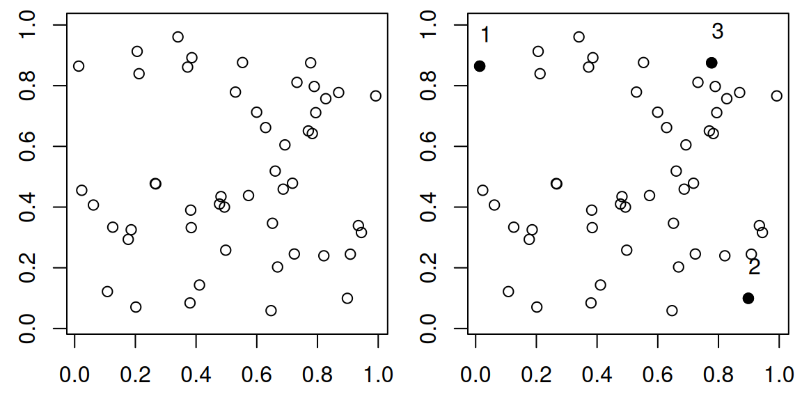
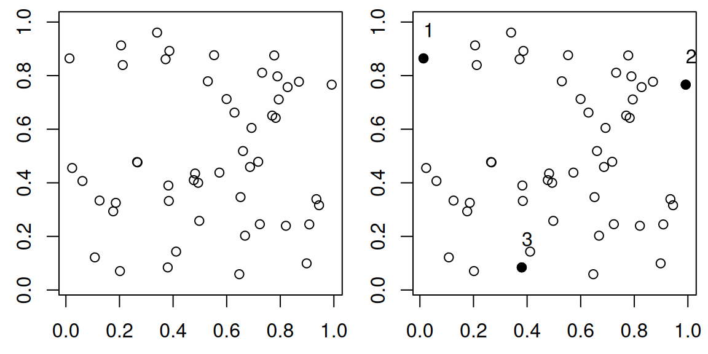

An algorithm for finding the most separated points in a cloud of points.
Author
Johan Larsson
Published
30 October 2016
My R package qualpalr selects qualitative colors by projecting a bunch of colors (as points) to the three-dimensional DIN99d color space wherein the distance between any pair colors approximate their differences in appearance. The package then tries to choose the n colors so that the minimal pairwise distance among them is maximized, that is, we want the most similar pair of colors to be as dissimilar as possible.
Up til now, qualpalr solved this problem with a greedy approach. If we, for instance, want to find n points we did the following.
M <- Compute a distance matrix of all points in the sample
X <- Select the two most distant points from M
for i = 3:n
X(i) <- Select point in M that maximize the
mindistance to all points in X
In R, this code looked like this (in two dimensions):
set.seed(1)# find n pointsn <-3mat <-matrix(runif(100), ncol =2)dmat <-as.matrix(stats::dist(mat))ind <-integer(n)ind[1:2] <-as.vector(arrayInd(which.max(dmat), .dim =dim(dmat)))for (i in3:n) { mm <- dmat[ind, -ind, drop =FALSE] k <-which.max(mm[(1:ncol(mm) -1) *nrow(mm) +max.col(t(-mm))]) ind[i] <-as.numeric(dimnames(mm)[[2]][k])}par(mfrow =c(1, 2), mai=c(0.5, 0.5, 0.1, 0.1))plot(mat, asp =1, xlab ="", ylab ="")plot(mat, asp =1, xlab ="", ylab ="")points(mat[ind, ], pch =19)text(mat[ind, ], adj =c(0, -1.5))

Numbers note the order the points were picked in.
While this greedy procedure is fast and works well for large values of n it is quite inefficient in the example above. It is plain to see that there are other subsets of 3 points that would have a larger minimum distance but because we base our selection on the previous 2 points that were selected to be maximally distant, the algorithm has to pick a suboptimal third point. The minimum distance in our example is 0.7641338.
The solution I came up with is based on a solution from Schlomer et al. (Schlömer, Heck, and Deussen 2011) who devised of an algorithm to partition a sets of points into subsets whilst maximizing the minimal distance. They used delaunay triangulations but I decided to simply use the distance matrix instead. The algorithm works as follows.
M <- Compute a distance matrix of all points in the sample
S <- Sample n points randomly from M
repeat
for i = 1:n
M <- Add S(i) back into M
S(i) <- Find point in M\S with max mindistance to any point in S
until M did not change
Iteratively, we put one point from our candidate subset (S) back into the original se (M) and check all distances between the points in S to those in M to find the point with the highest minimum distance. Rinse and repeat until we are only putting back the same points we started the loop with, which always happens. Let’s see how this works on the same data set we used above.
r <-sample.int(nrow(dmat), n)repeat { r_old <- rfor (i in1:n) { mm <- dmat[r[-i], -r[-i], drop =FALSE] k <-which.max(mm[(1:ncol(mm) -1) *nrow(mm) +max.col(t(-mm))]) r[i] <-as.numeric(dimnames(mm)[[2]][k]) }if (identical(r_old, r)) break}par(mfrow =c(1, 2), mai=c(0.5, 0.5, 0.1, 0.1))plot(mat, asp =1, xlab ="", ylab ="")plot(mat, asp =1, xlab ="", ylab ="")points(mat[r, ], pch =19)text(mat[r, ], adj =c(0, -1.5))

The new algorithm for picking points.
Here, we end up with a minimum distance of 0.8619587. In qualpalr, this means that we now achieve slightly more distinct colors.
Performance
The new algorithm is slightly slower than the old, greedy approach and slightly more verbose
f_greedy <-function(data, n) { dmat <-as.matrix(stats::dist(data)) ind <-integer(n) ind[1:2] <-as.vector(arrayInd(which.max(dmat), .dim =dim(dmat)))for (i in3:n) { mm <- dmat[ind, -ind, drop =FALSE] k <-which.max(mm[(1:ncol(mm) -1) *nrow(mm) +max.col(t(-mm))]) ind[i] <-as.numeric(dimnames(mm)[[2]][k]) } ind}f_new <-function(dat, n) { dmat <-as.matrix(stats::dist(data)) r <-sample.int(nrow(dmat), n)repeat { r_old <- rfor (i in1:n) { mm <- dmat[r[-i], -r[-i], drop =FALSE] k <-which.max(mm[(1:ncol(mm) -1) *nrow(mm) +max.col(t(-mm))]) r[i] <-as.numeric(dimnames(mm)[[2]][k]) }if (identical(r_old, r)) return(r) }}
n <-5data <-matrix(runif(900), ncol =3)microbenchmark::microbenchmark(f_greedy(data, n), f_new(data, n), times = 1000L)
Unit: milliseconds
expr min lq mean median uq max neval
f_greedy(data, n) 1.311413 1.346007 1.692128 1.363831 1.407456 40.94923 1000
f_new(data, n) 1.621765 1.934945 2.420683 2.183483 2.489382 15.32823 1000
cld
a
b
The newest development version of qualpalr now uses this updated algorithm which has also been generalized and included as a new function in my R package euclidr called farthest_points.
References
Schlömer, Thomas, Daniel Heck, and Oliver Deussen. 2011. “Farthest-Point Optimized Point Sets with Maximized Minimum Distance.” In, 135. ACM Press. https://doi.org/bpmnsh.